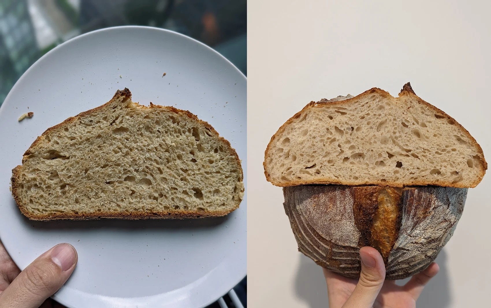
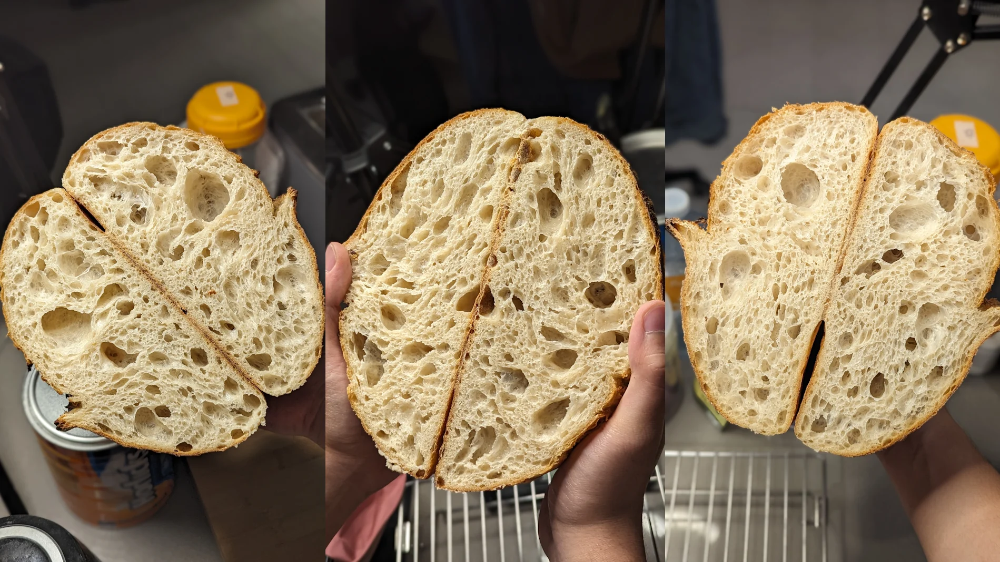

Tailor Your Bread
How you can tailor your bread to your taste by customising crumb, hydration levels and tanginess.
Crumb Preference
Closed Crumb - Small uniform alveoli, perfect for spreads and sandwiches.

Open Crumb - Less uniform, larger alveoli. Provides a light, airy texture that many sourdough enthusiasts prefer.
Hydration Level
Usually ranging (but not limited to) between 60-100%, the hydration level is how much water is used in proportion to flour (e.g. 75% hydration to 500g flour would be 375g water). The hydration level can change the following factors in your bread:
| Property | Low Hydration (60–70%) | High Hydration (75–100%) |
|---|---|---|
| Crumb | Closed | Open |
| Crust | Thick | Thin |
| Shelf Life | 3–4 Days | 4–7 Days |
| Texture | Thick with more "body". Think sandwich bread. | Light and airy. Approaches custardy the higher you go. |
Tanginess
The trademark "sourness" of sourdough derives from acetic acid, a byproduct of the yeast's consumption of the sugars created from starch in flour. This tanginess is one of the harder traits to adjust as, like many aspects of sourdough, it depends on countless environmental aspects. As an example, dough that has been fermented longer will have more acetic acid and be more sour. However pushing fermentation will edge you closer to overproofing your dough. While entering overproofing territory is fine, all people have preferences to tanginess and find this sweet spot between tanginess and proofing is a challenge in itself.